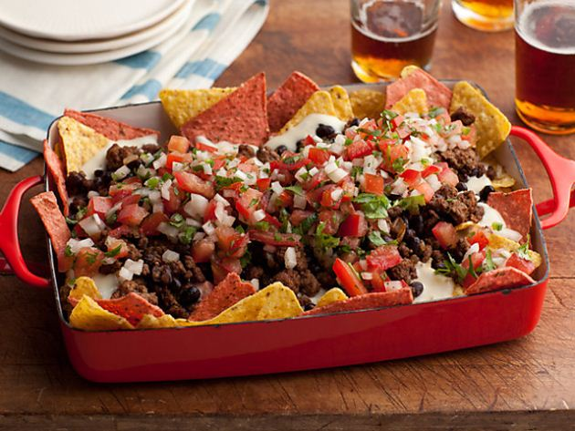

Super Nachos

Description
Nachos are a non-traditional Northern Mexican regional dish born in the 1940s that consists of fried tortilla chips or
totopos covered with melted yellow American cheese (or cheese sauce), often served as an American snack or appetizer.
More elaborate versions of the dish include other ingredients, and may be substantial enough to serve as a main dish. Ignacio "El Nacho"
Anaya created the dish in 1940.[6][7] The original nachos consisted of fried corn tortilla chips covered with melted cheese and sliced jalapeño peppers.
Nachos are very tasty and yummy!
Ingredients
- 1 pound ground beef
- 1.25 ounce package taco seasoning mix
- 3/4 cups of water
- 1 package restaurant styled tortilla chips
- 1 cup shredded sharp Cheddar cheese, or more to taste
- 1 can refried beans
- 1 cup salsa
- I cup sour cream, or more to taste
- 1 can pitted black olives, drained and chopped
- 4 greens onions, diced
- 1 can sliced jalapeno peppers, drained
Steps
- Cook and stir ground beef in a skillet over medium heat until meat is crumbly and no longer pink, 5 to 10 minutes.
Drain excess grease. Stir in taco seasoning mix and water and simmer until beef mixture has thickened, 8 to 10 minutes.
-
Set the oven rack about 6 inches from the heat source and preheat the broiler. Line a baking sheet with aluminum foil.
-
Spread tortilla chips on the prepared baking sheet; top with Cheddar cheese and dot with refried beans and ground beef mixture.
-
Broil in the preheated oven until cheese is melted, watching carefully to prevent burning, 3 to 5 minutes.
-
Top nachos with salsa, sour cream, black olives, green onions, and jalapeno peppers.